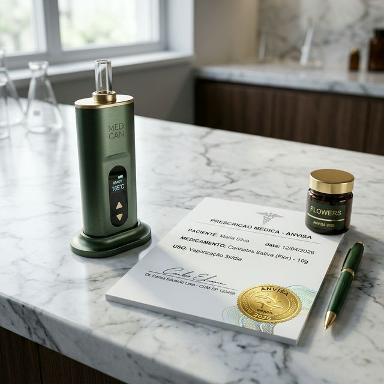

RDC 1.015/2026: O Novo Marco da Cannabis Medicinal no Brasil
A publicação da RDC 1.015/2026 pela ANVISA marca a maior evolução regulatória da última década. Ao oficializar a via inalatória e permitir a manipulação magistral personalizada, o Brasil coloca a soberania do paciente no centro da estratégia farmacêutica.

1. O Fim da RDC 327/2019 e a Maturidade Regulatória
Durante anos, a RDC 327 foi o pilar provisório do acesso. Com a chegada da **RDC 1.015/2026**, a ANVISA consolida as regras de fabricação e importação, focando na verticalização da cadeia produtiva local e na utilização de Insumos Farmacêuticos Ativos (IFAs) produzidos em solo nacional. Esta mudança reduz a dependência de importações e promete baratear o custo final para o paciente brasileiro.
2. Via Inalatória Oficializada (Vaporização)
A maior surpresa do novo marco é a oficialização da **via inalatória** para tratamento médico. Pacientes que necessitam de absorção imediata — como em crises de dor crônica ou espasticidade — agora têm respaldo legal para o uso de dispositivos de **vaporização de precisão** (ervas secas ou extratos).
Vaporização vs. Fumo:
A ANVISA é clara: a combustão (fumar) continua proibida para fins medicinais. O foco é a vaporização controlada por temperatura, que libera fitocanabinoides e terpenos sem a geração de toxinas da queima.
3. CBD em Farmácias de Manipulação
A partir de maio de 2026, as **Farmácias Magistrais** entram no ecossistema. Isso significa que você poderá manipular seu CBD de forma personalizada, com a dosagem exata prescrita pelo seu médico, muitas vezes com um custo até 40% menor que o produto de prateleira industrializado.
4. Acesso ao THC para Doenças Graves
O novo marco facilita o acesso a produtos com **concentração de THC acima de 0,2%** para doenças debilitantes graves, como Fibromialgia severa e Lúpus. Antes restrito a casos terminais, o THC agora é reconhecido como ferramenta pilar na modulação da dor sistêmica e inflamação crônica.
5. O Sandbox para Associações (RDC 1.014)
Paralelamente, a **RDC 1.014/2026** criou o Sandbox Regulatório: um ambiente experimental onde associações de pacientes podem cultivar e extrair medicina sob supervisão direta da ANVISA por até 5 anos. É a profissionalização do setor associativo em prol da segurança do paciente.
Baixe a Tabela de Custos 2026
Compare os valores entre CBD importado, de farmácia comum e de manipulação magistral.
Acessar Planilha Mestra